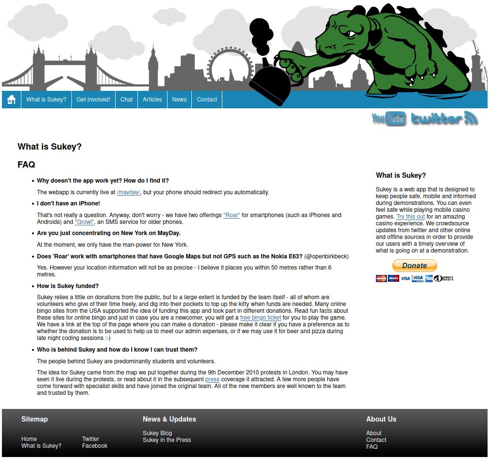

Sukey
Keeping protesters mobile and informed during protests. Languages: php, html, js, css.
Project Details / Background
Sukey is a platform designed to keep people safe, mobile, and informed during demonstrations. We crowdsource and verify information from Twitter and other online and offline sources to provide protestors with a timely overview of what’s happening on the ground. People at a demonstration can tag tweets with #sukey, or visit Sukey.io to anonymously send photo and text reports. Verified information is then digested, structured, and fed back to demonstrators. Those without a smartphone can use Twitter via SMS to receive regular updates from @sukeySMS.
Response from the Media Complex and Networked Fifth Estate
- 2011/10/21: ZDNet OccupyLSX wires up tech for St Paul's protest
- 2011/09/17: New Scientist Subversive apps help citizens fight state silencing
- 2011/07/04: ABC News State of sousveillance
- 2011/04/12: BBC Click How is technology changing protests?
- 2011/02/15: Business Day (South Africa) Sukey, the protester's best friend
- 2011/02/14: Le Monde Touchez pas aux forêts!
- 2011/02/11: The Guardian Government data like crime maps is not enough (but why believe them when we need an app to avoid being kettled?)
- 2011/02/10: Poetix Double Lyric
- 2011/02/09: New Scientist Police can't keep up with tech savvy protesters
- 2011/02/09: Talksport Ian Collins interviews Samuel Carlisle, co-inventor of Sukey
- 2011/02/02: The Guardian Inside the anti-kettling HQ
- 2011/01/28: The Economist Sukey take it off again
- 2011/02/09: BBC Radio London Sukey meets Rastamouse (audio)
- 2011/01/28: Liberal Conspiracy Introducing Sukey — a new online tool to help protesters evade kettles
- 2011/02/11: Canadian University Press New app tracks police kettling
- 2011/02/04: Toronto Star Students invent system to thwart police 'kettling'
- 2011/02/04: CBC Radio 1 Protesting? There's an app for that
- 2011/02/02: Boingboing Inside Sukey the anti-kettling mobile app
- 2011/01/28: Boingboing Sukey: an anti-kettling app for student demonstrators in London
- 2011/01/27: Beyond Clicktivism Polly Put the Kettle On, Sukey Take it Off
- 2011/01/28: TNW UK App launched to help student protestors avoid trouble
- 2011/01/28: Ben Goldacre Fascinating protestor app from UCL occupation people, gathers and disseminates info on policing
- 2011/01/31: Wired Sukey apps help protesters avoid police kettles
- 2011/02/07: ZDNet How students used tech to beat protest police 'kettling' tactics
- 2011/02/05: Annalist (Auf Deutsch) Nie wieder Einkesseln?
- 2011/02/03: Dan Reason (Auf Deutsch) DEMO-TOOL: SUKEY
- 2011/02/18: Paul Stott Blog Sukey Takes The Kettle Off
- 2011/02/07: eCadamey Sukey — is the digital world transforming revolution?
- 2011/02/05: Telepolis (Auf Deutsh) Anti-Einkesselungs-Netzwerk Sukey bewährt sich
- 2011/01/29: Contrarisk Situational awareness for protestors
- 2011/01/29: Mobile Media Consult Going out to protest with Sukey
- 2011/01/28: Crazy Zombies Sukey: An anti-kettling app for student demonstrators in London
- 2011/01/28: Stuff To Tweet Sukey: an anti-kettling app for student demonstrators in London
- 2011/01/28: Ads without Products Sukey
- 2011/01/28: Politics Home The ultimate tool for the savvy protester
- 2011/01/28: Andrew Tindall Taking the Kettle off of Protesting
- 2011/02/05: iRevolution Maps, Activism, and Technology: Check-Ins with a Purpose
- 2011/01/28: Kotzendes-einhorn (Auf Deutsch) Die App für den gewaltlosen Protest
- 2011/01/27: Indymedia #Sukey: Live demo info service for Saturday — ldn
- 2011/04/11: BBC Click Sukey on BBC Click (YouTube video)
- 2010/12/09: iRevolution Maptivism: Live Tactical Mapping for Protest Swarming
- 2012/11/14: MIT Center for Civic Media Blog Curating and Repackaging Citizen Video for the News at #MozFest
Image Gallery

The Original Sukey.org website- FAQ Page